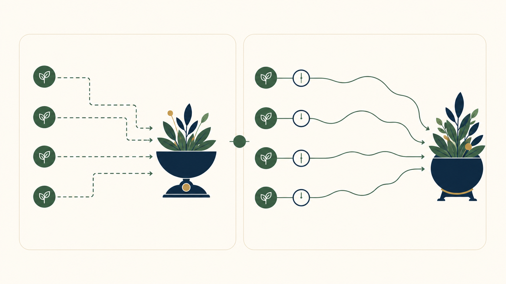

BOOK PASSAGE打开本地原书 →
定投账面赚了多少，为什么不等于年化收益
《指数基金投资指南》 · 第5章《如何买卖指数基金：懒人定投法》，PDF第202—261页；概念单元位于第235—239页
为何适合你专业知识讲解长期指数投资风险控制
核心主张：定投由多笔不同时间进入的现金流组成，期末盈利除以累计本金只能描述总收益，不能直接变成年化收益。要比较每笔资金实际工作了多久，需要使用资金加权收益率；等间隔现金流可用IRR，不规则日期则更适合XIRR。
- 第一笔投入可能工作了数月，最后一笔可能只工作了几天；把它们视为同一天投入，会扭曲资金效率。
- IRR寻找一个能让全部现金流现值相互抵消的周期收益率，再按周期换算；XIRR则直接使用每笔现金流的实际日期。
- 收益率口径只解决计量问题，不自动扣除费用、税务、汇率或机会成本，也不能把历史结果变成未来承诺。
“资金的投入时间各不相同。”
今天连接：休市日没有新的指数动作，这个概念提供的是一把核对历史记录的尺子：同样的期末盈利，在一次性投入与持续定投中代表的资金效率可能完全不同。
不要这样做：不要把简单总收益率直接年化，也不要把书中的历史回测、费率、税制或产品示例理解为当前条件下的收益承诺。

- 先列出每笔投入和取出的金额；投入记为流出，赎回、分红或期末资产记为流入。
- 再保留时间信息：等间隔记录使用相同周期，日期不规则时保留每笔现金流的实际日期。
- 最后选择对应口径：IRR或XIRR描述个人资金体验；若评价资产本身，应另用不受申赎时点影响的口径。